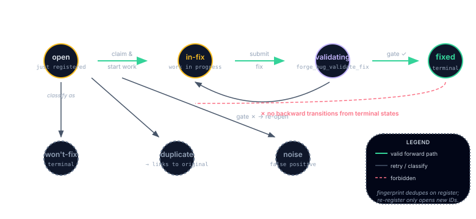

The Bug Registry
Every bug, fingerprinted. Every fix, validated. The registry remembers.
forge_bug_register → forge_bug_list → forge_bug_update_status → forge_bug_validate_fix. Records live in .forge/bugs/<bugId>.json.
Why a Registry?
Bugs found by the Tempering quorum, visual-diff scanners, or regression guard used to live in ad-hoc CHANGELOG entries and stray comments. They got fixed, forgotten, and then re-discovered three sprints later with different symptoms. The Bug Registry gives every scanner-discovered bug a durable record, fingerprinted, classified, tracked, and validated.
Fingerprint Dedup
When a bug is registered, the classifier computes a fingerprint from the scanner name + test name + assertion message + normalized stack trace. Re-registering the same fingerprint returns DUPLICATE_BUG with the existing bugId, no noise, no duplication.
The Status Lifecycle

in-fix (work in progress) -> fixed (terminal green) after forge_bug_validate_fix re-runs the originating scanner and the gate passes. If the validation gate fails, the bug stays in-fix with an entry appended to bug.validationAttempts[]. From 'open' there are two side classifications to dashed gray terminal states: wont-fix and duplicate (links to original). Backward transitions from any terminal state are forbidden (red dashed line crossed out). Fingerprint dedupes on register; re-registering an existing fingerprint does not open a new bug ID." class="diagram-img diagram-img-md my-4" />Every bug moves through an explicit state machine:
open → in-fix → validating → fixed
↘ wont-fix
↘ duplicate
open → noise (classifier ruled it a false positive)Transitions are enforced by forge_bug_update_status. An illegal transition returns INVALID_TRANSITION.
Classification
The classifier inspects evidence (test name, assertion message, stack trace, flakiness history) and returns one of:
real-bug, evidence is consistent across scanners; record is persisted and captured to L3 memory.flaky, evidence shows inconsistency; ignored unless confirmed across multiple runs.noise, a triage classification applied by the audit classifier (e.g. "known false-positive pattern"). It is not a bug status. Bugs flagged as noise are typically resolved aswont-fixwith the classification recorded inbug.triage.
Only real-bug outcomes write to .forge/bugs/ and fire tempering-bug-registered.
Closed-Loop Fix Validation
forge_bug_validate_fix re-runs the scanner that originally found the bug. On pass, the record moves to fixed, a tempering-bug-validated-fixed event fires, and, if OpenBrain is configured, an L3 thought is written so the next session knows what broke and what fixed it.
scannerOverride to validate with an equivalent. The validation log preserves both scanner names for audit.
Where You See It
The dashboard's Triage tab shows open bugs by severity, with status chips and quick-transition buttons. The Watcher's Home chip includes an open bugs count. Cross-linked to incidents via forge_incident_capture.